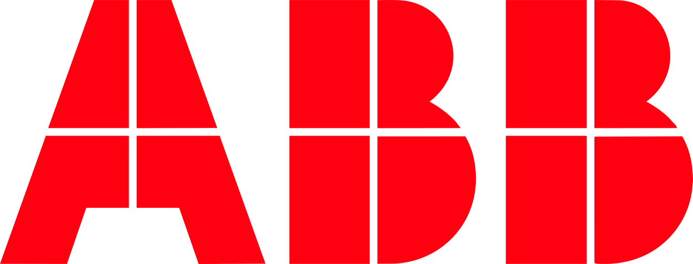

Karin Dietrich
Senior Operations & Project Lead mit über 15 Jahren Erfahrung an der Schnittstelle von Strategie und Technik. Spezialisiert auf die Skalierung von Marketing-Operations durch KI-Integration und effizientes Stakeholder-Management, garantiere ich höchste Schweizer Qualitätsstandards in der operativen Umsetzung. Mein Remote-Setup in Thailand nutze ich dabei für maximale Schlagkraft: Nahtlos integriert in die CET-Kernarbeitszeiten, mit dem klaren Effizienzvorteil der Zeitverschiebung.
Core Achievements
Enterprise Project Lead
Leitung des Kreativ- und UI/UX-Produktionsstreams für die Samsung Retail-Trainingsplattform in der DACH-Region.
KI-Workflow-Architektur
Implementierung einer proprietären KI-Content-Engine, die die Produktionszeit für Marketing-Assets um ca. 40% reduzierte.
Strategic Rebranding
Federführung bei einem umfassenden Corporate Rebranding inklusive Website-Overhaul und Verwaltung eines 8 Mio. CHF Budgets.
Mit diesen Firmen habe ich bereits zusammengearbeitet

Beruflicher Werdegang
Ein Auszug meiner Stationen in der operativen Projektleitung und Marketing-Steuerung.
Lead Implementation Manager & Process Lead
Marketing Butler erstellt als Agentur hochwertige Marketingunterlagen für Immobilienprojekte. Hier verantworte ich die operative Prozess-Exzellenz durch die Einführung strukturierter „Approval Gates“ und Quality-Checks. Durch die Implementierung KI-gestützter Workflows wurde die Time-to-Market für Assets um ca. 40 % beschleunigt.
Senior Project Manager (Creative & UI/UX)
In direktem Kontakt mit dem Kunden Samsung leitete ich den Kreativ- und UI/UX-Produktionsstream für die Retail-Trainingsplattform in der DACH-Region. Ich sicherte den Launch-Erfolg durch die Orchestrierung externer Agenturen und garantierte die Einhaltung sämtlicher Marken- und Rechte-Compliance.
Principal Consultant | Marketing Strategy
Retained Consultant für das ABB Global Brand Management zur Sicherstellung von „Zero Operational Downtime“ bei globalen Projekten. Unterstützung bei Corporate Events und der Logistik-Koordination für die Formula E. Parallel dazu Steuerung des B2B-Rollouts und Feature-Releases für eine Photovoltaik-SaaS-Applikation.
Corporate Project & Communications Coordinator (Contract)
Analyse und strategische Restrukturierung von Budgets für globale Tier-1-Initiativen wie Solar Impulse und COP24. Optimierung der grenzüberschreitenden Vendor Operations durch operative Steuerung einer Nearshore-Kreativagentur zur Verbesserung der Turnaround-Zeiten. Eigenverantwortliche Verwaltung von Purchase Orders und Rechnungsprüfung zur Sicherstellung der finanziellen Compliance.
Marketing Manager (Budget Owner)
Alleinige Verantwortung für ein Jahresbudget von 8 Mio. CHF. Operative Leitung von jährlich über sechs Grossmessen (inkl. Swissbau) und acht regionalen Kundenevents. Federführung beim Corporate Rebranding inklusive Website-Overhaul.
Professional Foundation
Stationen bei der Expovina AG (Messe-Koordination) und Promotion Tools AG (Personal-Logistik). Die Basis für meine heutige Präzision bildet die Ausbildung zur gelernten Goldschmiedin EFZ.
Core Skills & Tools
Eine Auswahl der Schwerpunkte meiner operativen Expertise und meines Tech-Stack für hocheffiziente und skalierbare Business-Workflows.
Workflows & Collaboration


Business & Marketing Ops


Creative & AI Innovation


Strategischer Zeitvorteil
Operative Beschleunigung statt nur Remote-Work: Mein Setup verwandelt geografische Distanz in einen massiven Geschwindigkeitsvorteil. Durch diesen asynchronen Workflow eliminiere ich den morgendlichen „Kaltstart“ Ihres Teams.
Wenn Ihre Kollegen die Arbeit aufnehmen, sind administrative Hürden bereits genommen und strategische Vorarbeiten abgeschlossen. Dieser nahtlose Übergang garantiert Schweizer Präzision bei deutlich verkürzter Time-to-Market – voll integriert in Ihre CET-Kernarbeitszeiten, aber mit dem entscheidenden Vorsprung von 5 bis 6 Stunden.
Kontakt
-
Email
kd@karindietrich.ch -
LinkedIn
linkedin.com/in/karin-dietrich -
Standort
Thailand / Verfügbar für Vor-Ort-Einsätze in der Schweiz